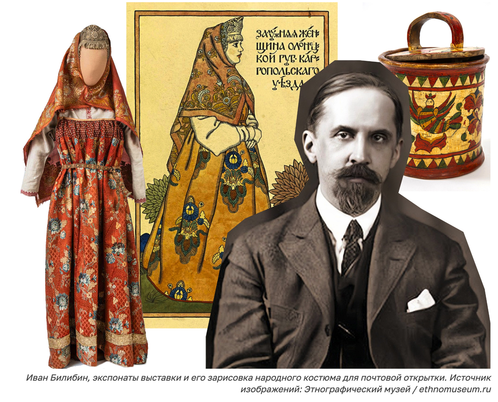

Ivan Bilibin's book illustrations
At the turn of the century, in response to rapid modernization there was an intense feeling of historical nostalgia among the intellectual classes in Russia.
Before the 1917 revolution, a highly politicised movement of ‘Russification’ swept across the Empire. Buildings, such as the famous Church on Spilled Blood were designed in homage to old architectural and artistic styles of old Russia. This romanticised period of creative design may have influenced Petersburg artist Ivan Bilibin.
Bilibin found himself between two schools of art; one that symbolised tradition, and one that emphasised artistic experimentation. His drawings and set designs certainly evoke this feeling of historical nostalgia. For the most part, his drawings depict scenes from famous Russian fairy tales. Many these are set in the dense birch-tree forests of Northern Russia. He depicted his characters in elegant, traditional Russian costumes. At the same time, however, the Art Nouveau style heavily influences his illustration.
Vibrant, but at the same time muted, his illustrations are made of basic, solid colours. The drawings are simple, but elegant, sometimes bursting with visual liveliness; the attention to the small details is clear. They are characterised by soft, curved shapes and lines typical of Art Nouveau style." (Thomas Reid. "Happy Birthday to Ivan Bilibin." https://www.russiancourses.com/blog/ivan-bilibin/) In fact, Bilibin developed his own style based on carefully traced and detailed outlined drawing, tinted in water color.
Back